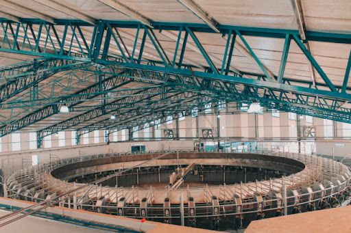
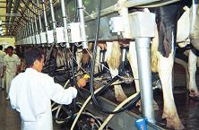

TODOTAMBO RAFAELA
ORGANIZACIÓN INTEGRAL PARA EL TAMBO
Esta es nuestra pasión y nuestro compromiso
Somos una empresa familiar con más de 30 años de trabajo en el sector lechero
Birndamos el mejor servicio de guardias permanentes, 24 hs. 365 días del año

Nuestros proyectos
Realizamos diseño y planificación de tambos, implementando las últimas tecnologías disponibles en el sector.
Gama de productos

Disponemos de una gran variedad de productos para manejo automático del ordeñe y limpieza y desinfección de equipamiento para su tambo.
Servicio técnico
Brindamos el mejor servicio para su tambo.
SERVICIO TÉCNICO CON GUARDIAS PERMANENTES.